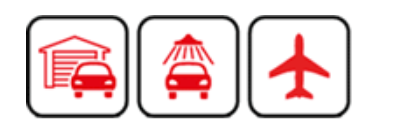

The journey by plane is usually a complex undertaking. Whether it's going on vacation or on a business trip, everything has to be well organized. An important aspect with regard to the planning of such a trip, is the safe accommodation of the vehicle at the Dusseldorf airport. Not always you can find known, have the time and take the driving to the Dusseldorf airport. This is not necessary, as you can park with us at the best conditions in the safest parking garage at Düsseldorf Airport. Our parking garage meets the highest possible safety standards and thus you can be sure that your vehicle is in the best hands. In addition, we always strive to ensure a smooth and uncomplicated processing to make your journey as comfortable as possible.
If you want to leave your car safely at Dusseldorf Airport during your absence, you can make your individual reservation at ParkenFlughafenDUS.de in only three steps. In the first step, determine your desired type of parking space, the duration of parking and the mode of transport. In the second step, you can optionally select a maintenance package. By entering your personal data in the third step, you can book your individually compiled parking service at Düsseldorf Airport. Within a few moments, you will receive a booking confirmation by e-mail.
Our company offers an all-round service if you want to park your car at the Dusseldorf airport. On request, our in-house and air-conditioned shuttle service will take you from our parking garage to the airport terminal. Alternatively, our service staff will gladly pick up your vehicle directly from the airport terminal and drive it safely into our parking garage. In addition, we offer a wide range of care services around the car. From paint care to polish, engine wash and paint jobs of all kinds, you can book valet parking services. Safety is always our top priority. Since our parking garage is alarm-protected and monitored 24 hours a day, you do not need to worry about your car. We keep your car key separately in a safe, so that high safety standards are guaranteed. If you have further questions to our service offer or the parking at the Duesseldorf airport, you are welcome to contact us. We look forward to your call!
@Copyright to Parkenflughafendus.de